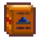

Dwarvish Translation Guide
| Dwarvish Translation Guide | |
|  | |
| Teaches you dwarvish. | |
| Information | |
| Source | Museum donation reward |
| Sell Price | Cannot be sold |
The Dwarvish Translation Guide is a special item unlocked by donating all 4 Dwarf Scrolls to the Museum.
It unlocks the player's ability to understand the language of the dwarves. This allows the player to communicate with the Dwarf in the Mines, the Dwarf in the Volcano Dungeon, and to read the rightmost gravestone in the Graveyard.
Once obtained, it can be found in the Player's Menu on the Special Items & Powers tab.
Scrolls
| Image | Name | Description | Price | Location |
|---|---|---|---|---|
| Dwarf Scroll I | A yellowed scroll of parchment filled with dwarven script. This one's tied with a red bow. |
| ||
| Dwarf Scroll II | A yellowed scroll of parchment filled with dwarven script. This one's tied with a green ribbon. |
| ||
| Dwarf Scroll III | A yellowed scroll of parchment filled with dwarven script. This one's tied with a blue rope. |
| ||
| Dwarf Scroll IV | A yellowed scroll of parchment filled with dwarven script. This one's tied with a golden chain. |
|
Trivia
- In the "rewards" screen shown after donating all 4 scrolls to the Museum, the item type of the Dwarvish Translation Guide reads "Crafting", even though it cannot be crafted.
Tip
- Floors 15, 55, 95 in the Mines have tillable soil near the entrance to the floor. The player can repeatedly revisit these floors via the elevator to till the soil and farm for Dwarf Scrolls I and IV.
External Links
- Kdau has created a Dwarvish translator website located at https://www.kdau.com/dwarvish/
History
- 1.0: Introduced.
- 1.5: Must be acquired to communicate with the Dwarf on Floor 5 in the Volcano Dungeon.
- 1.6: Now located in the new Special Items & Powers tab instead of the player's wallet.